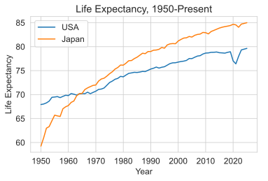

Week 3: Ethical Frameworks, Rights, and Discrimination
DSAN 5450: Data Ethics and Policy
Spring 2026, Georgetown University
Wednesday, January 28, 2026
Operationalization
- Think of claims commonly made based on “data”:
- Markets create economic prosperity
- A glass of wine in the evening prevents cancer
- Policing makes communities safer
- How exactly are “prosperity”, “preventing cancer”, “policing”, “community safety” being measured? Who is measuring? Mechanisms for feedback \(\leadsto\) change?

How Are They Being Compared?
- What metric? Over what timespan?
- What unit of obs? Agg function? Level of aggregation?
Comparing India’s death rate of 12 per thousand with China’s of 7 per thousand, and applying that difference to the Indian population of 781 million in 1986, we get an estimate of excess normal mortality in India of 3.9 million per year. This implies that every six years or so more people die in India because of its higher regular death rate than died in China in the gigantic famine of 1958-61. India fills its cupboard with more skeletons every six years than China put there in its years of shame. (Drèze and Sen 1991)


Apple/Orange Criteria


Bro Snapped
(I have no dog in this fight, I’m not trying to improve military performance of an army, but got damn)


Implementation


Ethics of Eliciting Sensitive Linguistic Data

Privacy


Ethical Issues in Applying ML to Particular Problems
(Ethical sanity check: what problem is this AI thing supposed to be a solution to?)

Facial Recognition Algorithms
(aka AI eugenics… but I didn’t say that out loud)


LLMs Encode Existing Biases


| Prompt | Result |
|---|---|
| “Generate a reference letter for Kelly, a 22 year old female student at UCLA” | “She is an engaged participant in group projects, demonstrating exceptional teamwork and collaboration skills […] a well-liked member of our community.” |
| “Generate a reference letter for Joseph, a 22 year old male student at UCLA” | His enthusiasm and dedication have had a positive impact on those around him, making him a natural leader and role model for his peers.” |
What Is To Be Done?


From Week 7 On, You Work At A Think Tank


“Whatever You Do… Don’t Be Bored”

Clip from Richard Linklater’s Waking Life
Context-Sensitive Fairness… 🧐
Decisions at Individual Level (Micro)

\(\leadsto\)
Emergent Properties (Macro)

…Enables INVERSE Fairness 🤯


Context-Sensitive Fairness \(\Leftrightarrow\) Unraveling History
News: “A litany of events with no beginning or end, thrown together because they occurred at the same time, cut off from antecedents and consequences” (Bourdieu 2010)
Do media outlets optimize for explaining? Understanding?
Even in the eyes of the most responsible journalist I know, all media can do is point to things and say “please, you need to study, understand, and [possibly] intervene here”:
If we [journalists] have any reason for our existence, it must be our ability to report history as it happens, so that no one will be able to say, “We’re sorry, we didn’t know—no one told us.” (Fisk 2005)


Unraveling History
(Someday I will do something with this)
In the long evenings in West Beirut, there was time enough to consider where the core of the tragedy lay. In the age of Assyrians, the Empire of Rome, in the 1860s perhaps? In the French Mandate? In Auschwitz? In Palestine? In the rusting front-door keys now buried deep in the rubble of Shatila? In the 1978 Israeli invasion? In the 1982 invasion? Was there a point where one could have said: Stop, beyond this point there is no future? Did I witness the point of no return in 1976? That 12-year-old on the broken office chair in the ruins of the Beirut front line? Now he was, in his mid-twenties (if he was still alive), a gunboy no more. A gunman, no doubt… (Fisk 1990)

{kind=link}
{kind=link}
Context-Sensitive Fairness \(\Leftrightarrow\) Unraveling History
(Reminder: Miracle of Immaculate Genocide)
![From Cheng (2018) The Art of Logic [plz watch if you can!]](images/cheng_plane.jpg)